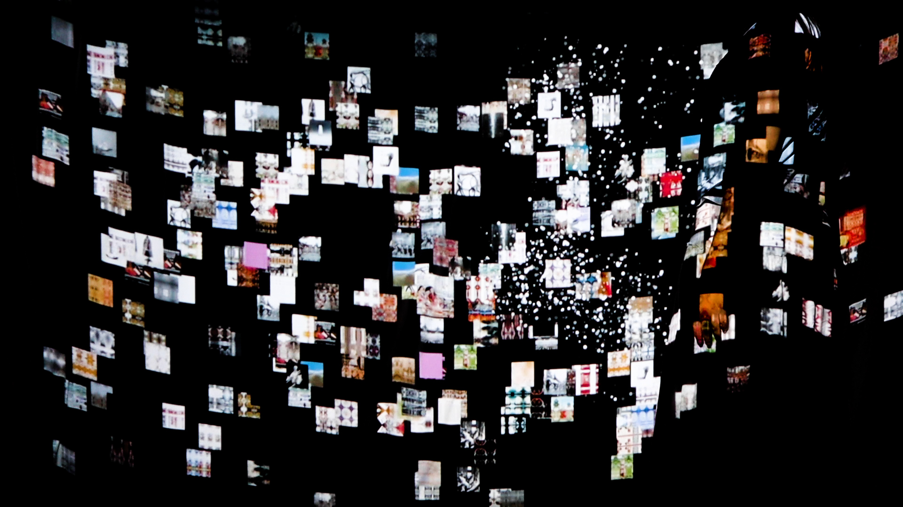
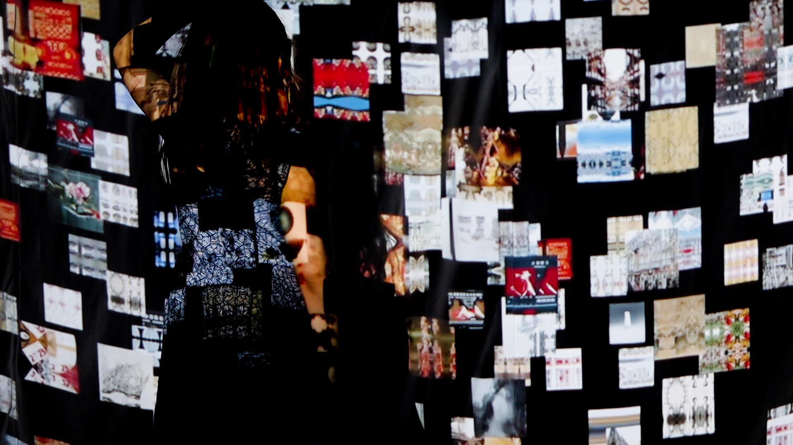
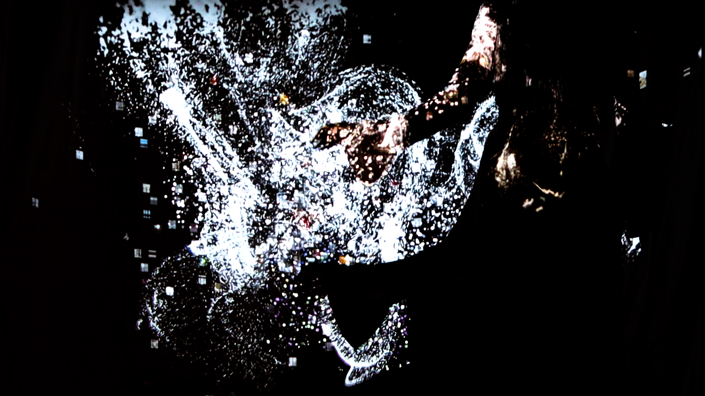
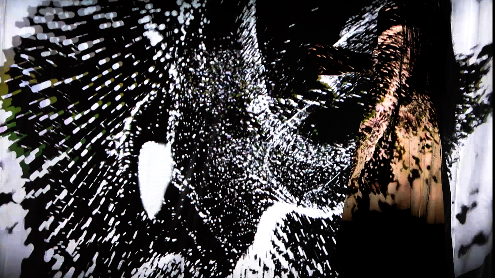
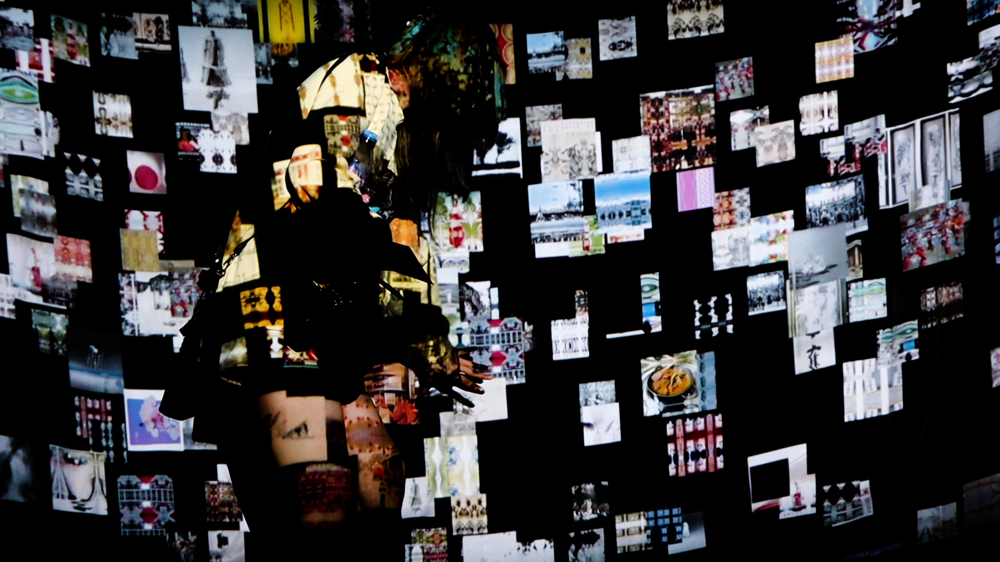
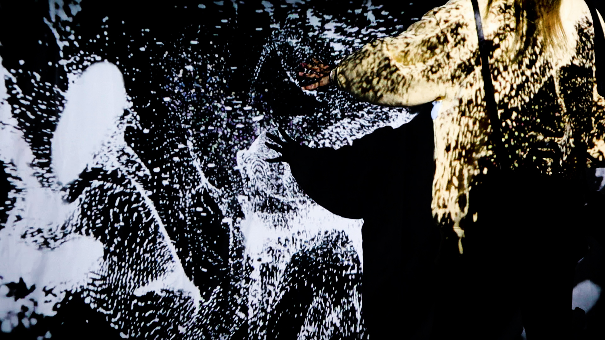
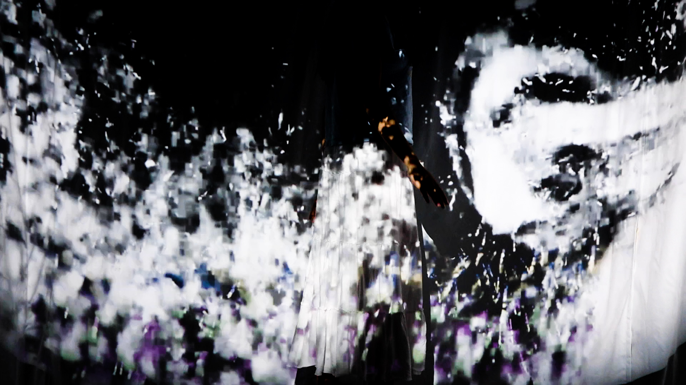
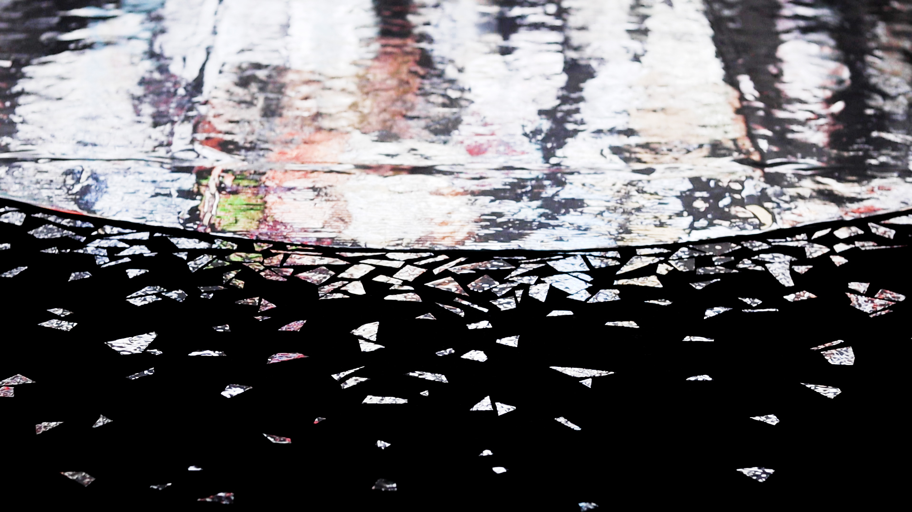

Vimeo Video
"Growing Without End" employs neural network machine learning technology to examine the relationships and conflicts within Chinese culture across various global contexts. The project seeks to explore the potential for establishing new ties between different regions amidst globalization, diversification, and decentralization. Symbolizing cultural fusion through image fusion, it aims to create an abstract, fluid, and cohesive shared experience based on common body movements. The ultimate goal is to forge aesthetic, experiential, and spiritual connections among various Chinese cultural groups through this medium.
Images
       "As a Chinese who grew up in China's native culture, studying abroad gave me the opportunity to come into contact with Chinese communities from different countries and regions. In the process of interacting with them, I deeply felt the isolation and conflict between different Chinese cultures. This phenomenon inspired me to explore how to bridge the cultural gap between us, which is rooted in the same culture but has significant differences, and activate our inner cultural resonance. The project used projector and KinectV2, sound equipment. The final projection space accommodated more than three interactors at the same time. All images are generated in advance by machine learning, but the fragmentation, fusion, and final abstract presentation of the images are dynamically adjusted according to human movement. In designing the algorithm, we deeply studied the influencing factors and tipping points and conducted weighted evaluations of the number of people and movement states. For the image learning strategy, we first conduct classification learning for major categories, then cross-learning to optimize the accuracy and generalization capability of the model. The final stylized images should be based on machine learning, incorporating a large amount of material, while maintaining authenticity and a sense of surrealism, to showcase the characteristics of the localization of Chinese culture globally. The sound part of "Growing Without End" utilizes granular synthesis, modular synthesis technology, and innovative use of Chinese musical instruments to create a completely new sound spectrum. This sound, centered on abstract electronic wave sounds with Chinese elements, displays the transition process from the sound elements of mundane life worldwide to the mainline sound, creating a digital sound environment rich in the local features of Chinese culture worldwide, mixed, and full of "life atmosphere". The project uses three layers of sound as three interactive modules: first, the "mundane life" module presents blurred mixed sounds of various cultures, which gradually weaken and eventually merge into the mainline sound as the interaction increases; second, the "background sound" module constantly cycles in the background as the mainline sound, becoming clearer as the interaction increases; finally, the "climax sound" module acts as a dynamic element, marking the start and end of the interaction. During the interaction process, the initial stage features "mundane life" as the main sound, "background sound" volume is smaller, as the interaction deepens, "mundane life" volume decreases, "background sound" increases, when the interaction reaches a certain level, "climax sound" appears, then enters a new cycle. The core of sound design is to connect sound changes with the collective bodily movement of interactors, forming a state similar to a surging crowd. This dynamic sound change, coupled with the visual effect of particles, together forms a comprehensive, dynamic experiential space, powerfully demonstrating the project's theme—"Growing Without End". The core of the interactive design of "Growing Without End" lies in adjusting the fragmentation, fusion, and final abstract presentation of images through human dynamic movement. To achieve this design, we deeply studied the influencing factors and tipping points and conducted precise weighted evaluations of the number of people and movement states. In terms of projection, I constructed a circular projection space, ideally the whole space is covered by projection, including the ceiling and the floor, so as to create a sense of "transformation". In such a space, the "life atmosphere" not only exists on the screen but also fills the entire physical space. It is embodied, interwoven with each participant's body and its movement relationship, making the interaction between people and spatial imagery truly connected, allowing the audience to truly enter the context of the localization of Chinese culture globally, experiencing the diversity and integration of Chinese culture. Utilizing machine learning, data processing, and Kinect technology, I employed the machine learning algorithm, StyleGAN2, to generate distinct images. The Kinect was instrumental in detecting the nodes of the human anatomy, which was essential for ascertaining both the number of individuals in a given space and the intensity of their movement. As the count of individuals or the intensity of movement escalates, the playback speed of Video1 is heightened. Concurrently, Sound1's volume amplifies while Sound2's volume diminishes. Upon reaching a specified threshold in terms of number of people or movement intensity, Video2 and Sound3 are activated for playback. Moreover, I harnessed processing to depict the participants' physique in a particle state, thus augmenting the interactive dimension between the participants and the visual display. The cultural backgrounds and personal expectations of the participants help to orientate themselves when they come into contact with the installation, while the characteristics of the spatial environment further influence the way they interact with the installation. The project is not concerned with Chinese culture, but with the diversity of identities and the possible connections between people, and the joint action of all participants will constitute a new aesthetic form, symbolizing the original and essence of culture. The project welcomes the participation of groups from all other cultures, whose presence will transform images that challenge and broaden our understanding of Chinese culture."